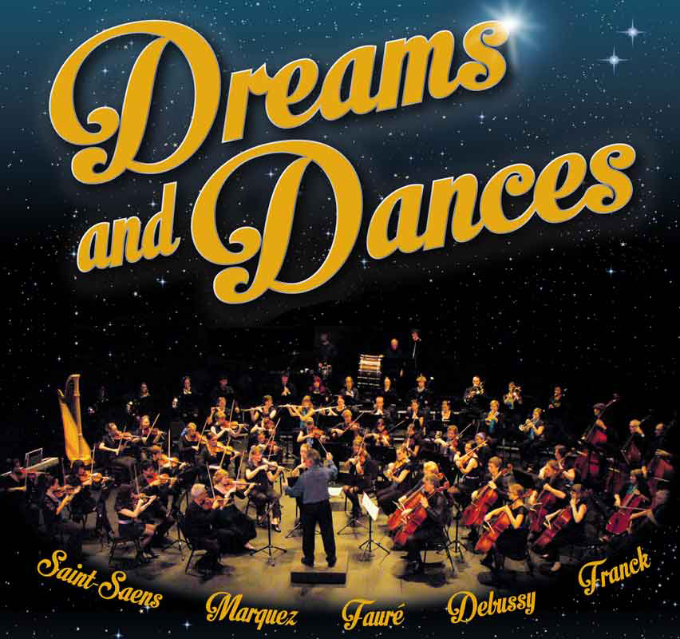
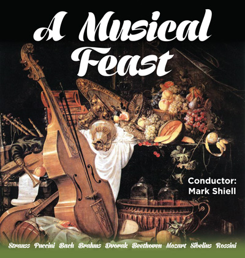

As conducted by
Richard McIntyre OAM, BMus (University of Sydney)

As conducted by
Mark Shiell
 Mark has guest-conducted ensembles including the Melbourne Symphony Orchestra, West Australian Symphony, Moscow Symphony Orchestra, State Academic Symphony Orchestra of St. Petersburg, Victorian Opera, Orchestra Ensemble Kanazawa, Canberra Symphony Orchestra, Sydney Sinfonia, Melbourne Youth Orchestra, University of Melbourne Symphony Orchestra and the Orchestras of the State Music Camps in Melbourne and Adelaide.
Mark has guest-conducted ensembles including the Melbourne Symphony Orchestra, West Australian Symphony, Moscow Symphony Orchestra, State Academic Symphony Orchestra of St. Petersburg, Victorian Opera, Orchestra Ensemble Kanazawa, Canberra Symphony Orchestra, Sydney Sinfonia, Melbourne Youth Orchestra, University of Melbourne Symphony Orchestra and the Orchestras of the State Music Camps in Melbourne and Adelaide.REVIEW
A Music Feast, by LGM
A musical feast was somewhat of a fabulous dinner dance with four lively dances of the Slavonic and Hungarian kind included.The opening Slavonic Dances Numbers 1 and 8 by Anton Dvorak were an indication of the feast to follow. The rhythm and exuberance was conveyed so well we didn’t need to actually see the dancers performing those tricky steps. Brahms Hungarian dances which lead the second part of the program were similarly very lively and invigorating; Brahms used folk songs extensively in these pieces and while being no expert I felt quite a bit of gypsy music infiltrated them.
REVIEW
Twilight, by Judy Hunter
Twilight was a community project to mark the 30th birthday of Dance North. The theme of the performance was sensing sea, sky and earth through connection with place. It involved over 150 performers over more than 14 locations on the beautiful headland at Jezzine. It was a performance in motion with the audience moving from one location to the next shepherded by volunteer guides.The performance began before sunset and continued while the sun went down and the horizon changed colour. The later stations were lit by candles and lighting concealed in the vegetation.